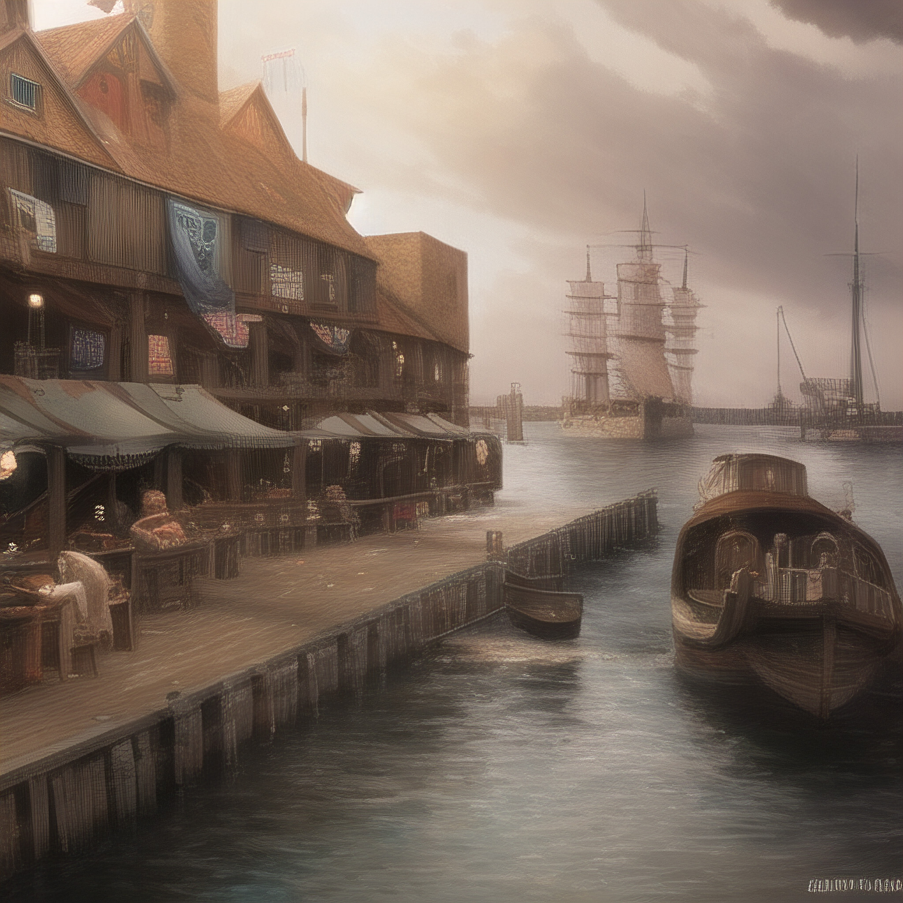

City - Portland

List of NPCs That Live in Portland
- Allen Smallhammer
- Age - 39
- Race : Human
- Sex : Male
- Occupation : Blacksmith
- Father of Mia Smallhammer
- Clyde
- Age : 60
- Race : Human
- Sex : Male
- Occupation :
- Old Soldier
- Lionore's teacher
- Gork Mcdork
- Age : 35
- Race : Half-Orc
- Sex : Male
- Occupation : Butcher
- Doesn't believe anyone that tells him he is a half orc
- Fiery orange facial and hair
- Higgin bothom
- Age : 43
- Race : Human
- Sex : Male
- Occupation : Mayor
- Thinks he is in control but is easily manipulated
- Has a lisp
- Horatio Mcalister
- Age : 32
- Race : Human
- Sex : Male
- Occupation : Ship Captain
- Mia Smallhammer
- Age : 18
- Race : Human
- Sex : Female
- Occupation : Blacksmith Assistant
- Daughter of Allen Smallhammer
- Poncho Knotter
- Age : 22
- Race : Human
- Sex : Male
- Occupation :
- sailor and fisherman
- Lionore's Best Friend
- Rhye Neverise
- Age : 25
- Race : Human
- Sex : Male
- Occupation : Baker
- Fierce alcoholic
- Susan
- Age : 61
- Race : Human
- Sex : Female
- Occupations : City Council Member, Town Librarian
- The town librarian even though there are only like 5 books one of which is a book of
records of all 3 generations that lived in port land.